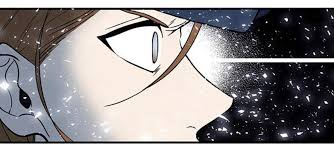

| 결백한 사람은 없다 |
 |
| 작가 | 서각
|
| 장르 | 스토리, 드라마 |
| 연재 요일 | 월요일 |
| 연재 기간 | 2020.04.12~현재 |
| 연재처 | 네이버바로가기 |
| 심의 등급 | 전체연령가 |
개요
15년 전 실종된 아이가 돌아왔다.
초능력을 가진 순경의 아동실종 심리 수사극
줄거리
타인의 거짓말을 감지할 수 있는 초능력을 지닌 이서희에겐 엄마처럼 따르는 이웃 아주머니 임정화가 있다. 15년전 실종되었던 정화의 아들 준후가 돌아오고, 자신을 준후라고 주장하는 청년이 준후가 아니라는 것을 아는 인물은 서희 뿐이다. 서희는 정화를 위해 진실을 파헤치기로 한다.
특징
등장인물
- 이서희: 갓 시보를 마친 6개월차 순경. 어려서 교통사고로 양친을 잃고, 사람의 거짓말을 느낄수 있는 초능력을 얻었다. 버거운 능력으로 어려운 유년기를 보냈지만 능력을 좋은 일에 쓰고 싶어 경찰이 되었다. 여성청소년과 근무를 희망하고 있다.
- 정팀장: 형사과 소속. 직급은 경위. 이서희의 능력을 탐내 이서희를 형사과로 스카웃하려 한다. 사건에서 피해자의 고통보다는 실적을 보는 인물이다. 이서희가 경찰학교에서 말썽이 생겨 퇴학당할 뻔 했을때 수습해 준 일이 있는 듯 하다.
- 임정화: 이서희를 딸처럼 길러준 이웃. 아들인 준후가 실종되고, 이후 남편과도 사별한채 시어머니를 모시며 어렵게 살았다. 이서희 앞에서 평생 한번도 거짓말을 해본적 없는 정직한 사람이다.
- 준후: 15년전 실종되어 미제사건으로 끝내 찾지 못했으나, 현시점에서 홀연히 돌아왔다. 기억을 잃고 보육원에서 살았다고 하나, 실종되었던 준후 본인이라고 믿기에는 미심쩍은 부분이 많다.
- 오유진: 이서희의 초등학교 동창이다. 귀티나는 외모로 동급생들 사이에서 인기가 많았다. 양친이 없다는 것을 숨겼으나, 이서희가 얼결에 발설해버린 뒤 이서희를 따돌렸다. 현재 수사과에서 서무 업무를 맡고 있다. 이서희의 상식을 넘어선 통찰이 신기 때문이라고 믿는 듯 하다.
설정 및 세계관
이서희의 능력에는 몇 가지 조건이 있다.
- '능력'은 타인의 거짓말을 보여준다.
- 그러나 그 거짓말을 지어낸 사람이 발화자인지, 발화자가 단순히 타인의 거짓말을 믿고 그대로 옮기는 것인지는 구분할 수 없다.
- 육체적으로 피곤함을 느끼면 능력을 쓰는 '스위치'를 통제하기 힘들다.
- 능력을 혹사하면 어두운 공간에 덜렁 떠 있는 문과 함께, '집어삼켜져서, 흔적도 없이 사라지고 싶지?' 라는 집요한 목소리의 환각에 시달린다.
트리비아
같이 보기